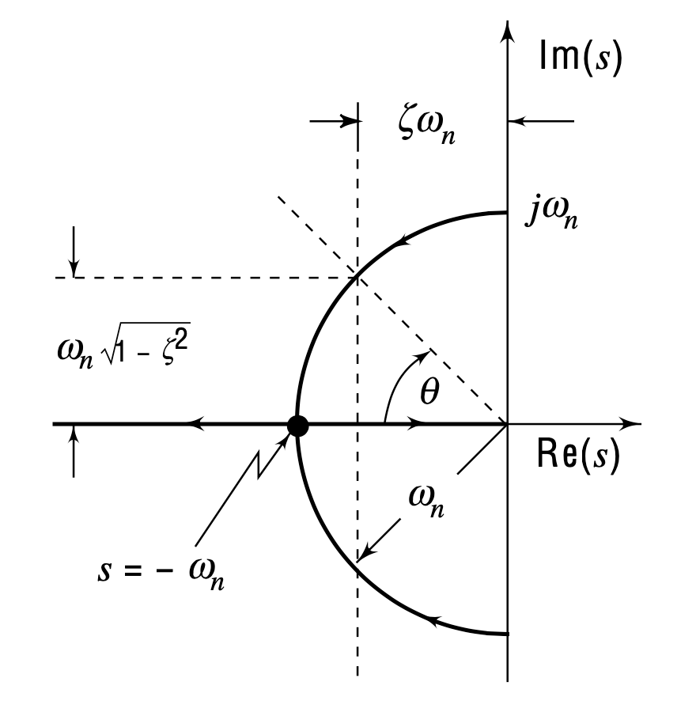
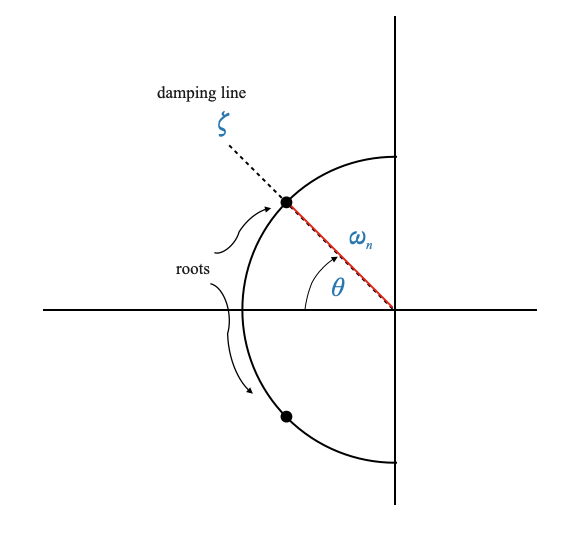

Ciclo di progettazione per un sistema standard del secondo ordine
Prenderemo come esempio i sistemi del secondo ordine. Tuttavia, prima di immergersi nel ciclo di progettazione, è fondamentale capire che, sebbene i sistemi del mondo reale potrebbero non essere sempre di secondo ordine, padroneggiare la progettazione di tali sistemi è fondamentale. Questa conoscenza può essere estesa a sistemi più complessi. Iniziamo con un sistema standard del secondo ordine in una configurazione a feedback unitario.
La descrizione del sistema
Consideriamo la funzione di trasferimento \(G(s)\) nel percorso in avanti di un sistema a retroazione unitaria:
e la funzione di trasferimento ad anello chiuso \(Y(s)/R(s)\) è data da:
\[
\frac{Y(s)}{R(s)} = \frac{\omega_n^2}{s^2 + 2\zeta\omega_n s + \omega_n^2}
\]
Dove: - $ _n $ è la frequenza naturale non smorzata. - $ $ è il rapporto di smorzamento.
Comprendere il rapporto di smorzamento (\(\zeta\))
Sistema non smorzato (\(\zeta = 0\)): comportamento puramente oscillatorio.
Sotto-Smorzato (\(0 < \zeta < 1\)): Oscillatory but decaying response.
Critically Damped (\(\zeta = 1\)): Fastest return to equilibrium without overshooting.
Over-Damped (\(\zeta > 1\)): Ritorno lento all’equilibrio senza oscillazioni.
Equazione caratteristica e radici
L’equazione caratteristica è:
\[
\Delta (s) = s^2 + 2\zeta\omega_n s + \omega_n^2
\]
Le radici di questa equazione (poli a circuito chiuso o radici caratteristiche) sono fondamentali per l’analisi del comportamento del sistema.
Le radici caratteristiche di un sistema standard del secondo ordine possono essere derivate dalla sua equazione caratteristica. Per il sistema rappresentato dalla funzione di trasferimento $ G(s) = $, l’equazione caratteristica si ottiene dal denominatore del trasferimento ad anello chiuso funzione:
\[
\Delta s = s^2 + 2\zeta\omega_n s + \omega_n^2 = 0
\]
Per trovare le radici di questa equazione caratteristica, risolviamo $ s $. Queste radici, note anche come poli del sistema, determinano il comportamento del sistema.
Risolvendo l’equazione quadratica $ s^2 + 2_n s + _n^2 = 0 $ utilizzando la formula quadratica, otteniamo:
\[
s = \frac{-2\zeta\omega_n \pm \sqrt{(2\zeta\omega_n)^2 - 4\omega_n^2}}{2}
\]
Semplificando ulteriormente:
\[
s = \frac{-2\zeta\omega_n \pm \sqrt{4\zeta^2\omega_n^2 - 4\omega_n^2}}{2}
\]
\[
s = \frac{-2\zeta\omega_n \pm \sqrt{4\omega_n^2(\zeta^2 - 1)}}{2}
\]
\[
s = \frac{-2\zeta\omega_n \pm 2\omega_n\sqrt{\zeta^2 - 1}}{2}
\]
\[
s = -\zeta\omega_n \pm \omega_n\sqrt{\zeta^2 - 1}
\]
Quindi, le radici (o poli) caratteristiche sono:
\[
s = -\zeta\omega_n \pm \omega_n\sqrt{\zeta^2 - 1}
\]
A seconda del valore di $ $ (il rapporto di smorzamento), queste radici possono essere reali o complesse:
Per $ < 1 $ (under-damped): The roots are complex conjugates.
\[ s = -\zeta\omega_n \pm j\omega_n\sqrt{1 - \zeta^2} \]
For $ = 1 $ (critically damped): The roots are real and identical.
\[ s = -\omega_n \]
For $ > 1 $ (sovrasmorzato): le radici sono numeri reali distinti.
Queste radici sono cruciali per comprendere la risposta transitoria, la stabilità e il comportamento generale del sistema.
Visualizzazione caratteristica delle radici
Per $ = 0 $ (sottosmorzato):
\[ s = \pm j\omega_n \]
Per $ = 1 $ (criticamente smorzato): le radici sono reali e identiche.
\[ s = -\omega_n \]
Possiamo tracciare come si muovono le radici nel piano s.
Usiamo Python per questo eseguendo la cella sottostante
import numpy as npimport matplotlib.pyplot as plt# Set the undamped natural frequencyomega_n =1# You can adjust this as needed# Create a range of zeta values from 0 to 2zeta_values = np.linspace(0, 2, 400)# Prepare a plotplt.figure(figsize=(10, 8))for zeta in zeta_values:# Calculate the roots for each zetaif zeta <1:# Under-damped (Complex conjugate roots) roots = [-zeta * omega_n +1j* omega_n * np.sqrt(1- zeta**2),-zeta * omega_n -1j* omega_n * np.sqrt(1- zeta**2)] color ='blue'elif zeta ==1:# Critically damped (Repeated real roots) roots = [-zeta * omega_n, -zeta * omega_n] color ='green'else:# Over-damped (Distinct real roots) roots = [-zeta * omega_n + omega_n * np.sqrt(zeta**2-1),-zeta * omega_n - omega_n * np.sqrt(zeta**2-1)] color ='red'# Plot the roots plt.plot([root.real for root in roots], [root.imag for root in roots], 'o', color=color)# Annotating key pointsplt.annotate('Undamped\n(Complex Roots)', xy=(0, omega_n), xytext=(0.5, omega_n+0.5), arrowprops=dict(facecolor='black', shrink=0.05))plt.annotate('Critically Damped\n(Repeated Real Roots)', xy=(-omega_n, 0), xytext=(-2, 0.5), arrowprops=dict(facecolor='black', shrink=0.05))plt.annotate('Over-Damped\n(Distinct Real Roots)', xy=(-2*omega_n, 0), xytext=(-2.5, -0.5), arrowprops=dict(facecolor='black', shrink=0.05))# Setting plot featuresplt.title('Root Locus as Damping Ratio (zeta) Varies')plt.xlabel('Real Part')plt.ylabel('Imaginary Part')plt.axhline(y=0, color='k') # x-axisplt.axvline(x=0, color='k') # y-axisplt.grid(True)plt.xlim(-2.5, 0.5)plt.ylim(-1.5, 1.5)# Show the plotplt.show()
La quantità \(\zeta\omega_n\) ha un ruolo molto importante: è la parte reale della coppia complessa coniugata.

Determinazione dell’angolo di smorzamento (\(\theta\))
Data la geometria del diagramma del luogo delle radici sopra possiamo determinare l’angolo \(\theta\) (suggerimento: il raggio del cerchio è \(\omega_n\)):
La linea della costante \(\theta\) (e quindi della costante \(\zeta\)) è chiamata linea di smorzamento. Dato uno specifico \(\zeta\) le radici si troveranno lungo la linea di smorzamento associata.
Dati i poli specifici \(\theta\), \(\omega_n\) del circuito chiuso, le radici dell’equazione caratteristica sono:

oppure: \[ s = -\zeta\omega_n \pm j\omega_n\sqrt{1 - \zeta^2} \]
Ciò significa che dati \(\theta\), \(\omega_n\) specifici possiamo tradurre questi valori in poli ad anello chiuso.
Il criterio di progettazione sarà quindi quello di forzare i poli del circuito chiuso nella posizione desiderata, dove si ottengono le prestazioni desiderate (ovvero, soddisfare le specifiche di risposta transitoria).
BARRA LATERALE - Relazione tra \(\zeta\), \(\omega_n\) e poli ad anello chiuso
Relazione tra \(\zeta\), \(\omega_n\) e poli ad anello chiuso:
In un sistema standard del secondo ordine, i parametri \(\zeta\) (rapporto di smorzamento) e \(\omega_n\) (frequenza naturale non smorzata) sono determinanti chiave del comportamento del sistema.
I valori di \(\zeta\) e \(\omega_n\) definiscono direttamente la posizione dei poli del circuito chiuso nel piano complesso. Ad esempio, un cambiamento in \(\zeta\) e \(\omega_n\) sposterà questi poli, influenzando la risposta transitoria del sistema.
Equivalenza di specificare \(\zeta\), \(\omega_n\) e poli ad anello chiuso:
I poli a circuito chiuso, a loro volta, determinano le principali caratteristiche prestazionali del sistema, come superamento, tempo di assestamento e frequenza di oscillazione.
Importanza nella progettazione del luogo delle radici:
Questa comprensione costituisce la base della progettazione del luogo delle radici, un metodo utilizzato per determinare la stabilità di un sistema di controllo e progettare controllori.
Nella progettazione del luogo delle radici, in genere si inizia con una risposta transitoria desiderata (definita da \(\zeta\) e \(\omega_n\)) e quindi si regola il controller per spostare i poli del sistema in queste posizioni predefinite nel piano complesso.
Traduzione di \(\zeta\) e \(\omega_n\) in posizioni dei poli a circuito chiuso:
Specificando \(\zeta\) e \(\omega_n\), essenzialmente imposti un obiettivo per dove vuoi che siano i poli a circuito chiuso. L’attività di progettazione diventa quindi una questione di modifica del sistema (spesso tramite un controller) in modo che i suoi poli effettivi si allineino con queste posizioni target.
Il raggiungimento di questo allineamento garantisce che la risposta transitoria del sistema soddisfi i criteri di prestazione specificati.
Per determinare il tempo per raggiungere il picco (\(t_p\)) per un sistema standard del secondo ordine, dobbiamo analizzare la risposta del sistema e scoprire quando raggiunge il suo primo massimo. Ciò si verifica in un punto estremo della funzione di risposta, dove la derivata prima della risposta rispetto al tempo (\(t\)) è uguale a zero.
Analizziamo i passaggi per trovare \(t_p\):
La funzione di risposta:
Per un sistema di secondo ordine sottosmorzato (\(0 < \zeta < 1\)), the step response is given by: \[
y(t) = 1 - \frac{e^{-\zeta\omega_nt}}{\sqrt{1-\zeta^2}}\sin(\omega_d t + \theta)
\] where \(\omega_d = \omega_n\sqrt{1-\zeta^2}\) and \(\theta = \cos^{-1}(\zeta)\).
Finding the Extremum:
The extremum occurs where the derivative of \(y(t)\) with respect to \(t\) is zero. Let’s find this derivative:
\[
\frac{dy}{dt} = \zeta\omega_n \frac{e^{-\zeta\omega_nt}}{\sqrt{1-\zeta^2}}\sin(\omega_d t + \theta) - \omega_d \frac{e^{-\zeta\omega_nt}}{\sqrt{1-\zeta^2}}\cos(\omega_d t + \theta).
\]
Setting \(\frac{dy}{dt} = 0\) gives us the condition for the peak.
Simplifying the Equation:
The equation \(\frac{dy}{dt} = 0\) simplifies to: \[
\zeta\sin(\omega_d t + \theta) = \sqrt{1-\zeta^2}\cos(\omega_d t + \theta).
\]
Using the identity \(\sin(a + b) = \sin(a)\cos(b) + \cos(a)\sin(b)\), we get: \[
\zeta[\sin(\omega_d t)\cos(\theta) + \cos(\omega_d t)\sin(\theta)] = \sqrt{1-\zeta^2}\cos(\omega_d t).
\]
Since \(\theta = \cos^{-1}(\zeta)\), \(\sin(\theta) = \sqrt{1-\zeta^2}\) and \(\cos(\theta) = \zeta\). Substituting these into the equation, we simplify it to: \[
\zeta^2\sin(\omega_d t) + \sqrt{1-\zeta^2}\cos(\omega_d t)\sin(\omega_d t) = \zeta\cos(\omega_d t).
\]
Finding \(t_p\):
The equation simplifies to \(\sin(\omega_d t) = 0\), indicating that the peak occurs at a multiple of \(\pi/\omega_d\). The first peak (\(t_p\)) occurs at: \[
t_p = \frac{\pi}{\omega_d} = \frac{\pi}{\omega_n\sqrt{1-\zeta^2}}.
\]
Si noti che il tempo per il primo superamento negativo sarebbe \(\omega_d t = 2\pi\), il tempo per il secondo superamento \(\omega_d t = 3\pi\) e così via.
Superamento massimo (\(M_p\)):
Per ricavare il valore massimo di superamento (\(M_p\)) per un sistema di secondo ordine sottosmorzato, dobbiamo valutare la risposta del sistema al momento del picco (\(t_p\)), che abbiamo determinato in precedenza. Il superamento massimo è la quantità di cui la risposta del sistema supera il suo valore finale (che è 1 per un ingresso a gradino unitario) al primo picco.
Richiama la funzione di risposta:
La risposta per un sistema sottosmorzato (\(0 < \zeta < 1\)) a un ingresso a gradino unitario è:
\[
y(t) = 1 - \frac{e^{-\zeta\omega_nt}}{\sqrt{1-\zeta^2}}\sin(\omega_d t + \theta),
\]
dove \(\omega_d = \omega_n\sqrt{1-\zeta^2}\) e \(\theta = \cos^{-1}(\zeta)\).
Valuta la risposta a \(t_p\):
Abbiamo precedentemente scoperto che \(t_p = \frac{\pi}{\omega_d}\). Sostituendo questo nella funzione di risposta si ottiene:
Questa espressione finale fornisce il massimo superamento \(M_p\) per un sistema del secondo ordine sottosmorzato. Quantifica quanto il primo picco della risposta del sistema supera il valore di stato stazionario in risposta a un ingresso a gradino unitario. Il superamento dipende esclusivamente dal rapporto di smorzamento \(\zeta\) e quando \(\zeta\) si avvicina a 1 (transizione allo smorzamento critico), \(M_p\) diminuisce, riflettendo un minore superamento nella risposta del sistema.
Domanda pop-up: Cosa succede al momento di picco (\(t_p\)) quando il rapporto di smorzamento ($ $) aumenta?
Risposta: All’aumentare di $ $, $ _d = _n $ diminuisce, portando ad un aumento del tempo di picco (\(t_p\)).
Specifiche delle prestazioni transitorie
Continuiamo la nostra esplorazione dell’ingegneria di controllo, concentrandoci sulle specifiche delle prestazioni transitorie. Ricorda, stiamo utilizzando una risposta al gradino, tipicamente una risposta al gradino unitario, come strumento principale per esaminare la risposta transitoria dei sistemi di secondo ordine. E, cosa interessante, queste specifiche si applicano anche ai sistemi di ordine superiore.
Tempo di salita, superamento del picco, tempo al picco e tempo di assestamento
Si noti che il tempo di salita dipende sia da $ $ che da $ _n $, ma l’effetto di $ $ è relativamente piccolo.
Come abbiamo discusso, vorremmo che il tempo di lievitazione fosse il più breve possibile. Ciò significherebbe che il sistema risponde rapidamente.
Per visualizzare come varia il tempo di salita con $ $ e $ _n $ e per dimostrare che il tempo di salita rimane relativamente costante al variare di $ $, possiamo scrivere uno script Python utilizzando librerie come matplotlib per la stampa e numpy per calcoli numerici.
In questo script: - Definiamo un intervallo di valori $ $ compreso tra 0,01 e 0,99. - Selezioniamo alcuni valori di $ _n $ per illustrare l’effetto sul tempo di salita. - Usiamo la formula derivata per il tempo di salita e la tracciamo rispetto a $ $ per ogni $ _n $. - Il grafico mostrerà più curve, ciascuna rappresentante un diverso $ _n $, e come varia il tempo di salita con $ $ per questi valori.
L’esecuzione di questo codice genererà un grafico che illustra la relazione tra tempo di salita, rapporto di smorzamento $ $ e frequenza naturale $ _n $. Il grafico dimostrerà che mentre il tempo di salita varia con diversi valori $ _n $, l’effetto di $ $ sul tempo di salita è relativamente piccolo, specialmente all’interno di un intervallo tipico di $ $.
import numpy as npimport matplotlib.pyplot as plt# Define a range of zeta and omega_n valueszeta_values = np.linspace(0.01, 0.99, 100) # Zeta values from 0.01 to 0.99omega_n_values = np.array([1, 2, 5, 10]) # Different omega_n values# Function to calculate rise timedef rise_time(zeta, omega_n):return (np.pi - np.arccos(zeta)) / (omega_n * np.sqrt(1- zeta**2))def normalised_rise_time(zeta):return (np.pi - np.arccos(zeta)) / (np.sqrt(1- zeta**2))# Plottingplt.figure(figsize=(10, 6))for omega_n in omega_n_values: rt = rise_time(zeta_values, omega_n) plt.plot(zeta_values, rt, label=f'ωₙ = {omega_n}')wnrt = normalised_rise_time(zeta_values)plt.plot(zeta_values, wnrt, label=f'ωₙtₙ')# Add vertical lines at zeta = 0.4 and zeta = 0.7plt.axvline(x=0.4, color='gray', linestyle='--', linewidth=1.5, label='ζ = 0.4')plt.axvline(x=0.7, color='gray', linestyle='--', linewidth=1.5, label='ζ = 0.7')plt.title('Rise Time vs Damping Ratio (ζ) for Different ωₙ')plt.xlabel('Damping Ratio (ζ)')plt.ylabel('Rise Time')plt.legend()plt.grid(True)plt.show()
In questo caso $ M_p $ dipende esclusivamente dal rapporto di smorzamento $ $.
Vorremmo che il tempo di salita \(t_r\) fosse il più breve possibile, ma anche che la massima sovraelongazione rimanesse piccola. Un elevata sovraelongazione significa che il sistema è prossimo all’instabilità e anche piccole variazioni dei parametri potrebbero rendere il sistema instabile.
In genere, $ M_p $ è accettabile quando è compreso tra $ 5% $ e \(40\%\). È accettabile anche un valore inferiore a \(5\%\), ma in genere ciò significa che il tempo di salita sarà molto elevato.
Ciò significa che in genere: \(0,4 < \zeta < 0,7\). Con riferimento alla figura precedente, in questo intervallo \(\omega_n t_r\) (il tempo di salita normalizzato) è praticamente costante e non influenzato troppo dalla variazione del rapporto di smorzamento.
Se questo è vero allora possiamo dire che il tempo di salita è l’inverso della frequenza naturale non smorzata:
Per ottimizzare le prestazioni di un sistema di controllo, in particolare la sua velocità di risposta, spesso miriamo a diminuire il tempo di salita. Il tempo di salita, che indica quanto velocemente un sistema risponde ai cambiamenti, è inversamente correlato alla frequenza naturale del sistema, $ _n $. Pertanto, per ridurre il tempo di salita, una strategia comune è progettare il sistema in modo tale che $ _n $ sia il più grande possibile.
Tuttavia, questo approccio comporta un avvertimento significativo. Aumentando $ _n $ aumenta anche la larghezza di banda del sistema. La larghezza di banda, in termini semplici, è la gamma di frequenze su cui il sistema può operare efficacemente. Una larghezza di banda maggiore significa che il sistema diventa più sensibile a una gamma più ampia di frequenze, comprese quelle nella gamma più alta.
La sfida con una larghezza di banda ampia è che consente ai segnali ad alta frequenza, che spesso sono rumore, di penetrare nel sistema. Questi segnali ad alta frequenza possono influire negativamente sulle prestazioni del sistema. Al contrario, i segnali utili nella maggior parte dei sistemi di controllo hanno tipicamente una frequenza più bassa. Pertanto, sebbene un’ampia larghezza di banda possa migliorare la velocità di risposta, può compromettere la capacità del sistema di filtrare il rumore indesiderato.
Pertanto, quando si progetta un tempo di salita ottimale, è necessario considerare il compromesso tra velocità di risposta e immunità al rumore. L’obiettivo non è raggiungere il tempo di salita teorico più piccolo, ma trovare un equilibrio pratico che garantisca l’affidabilità e la stabilità del sistema. Questo equilibrio è in gran parte influenzato dalle limitazioni della larghezza di banda.
L’equilibrio appropriato tra tempo di salita e larghezza di banda dipende fortemente dai componenti e dalle caratteristiche specifiche del sistema. Ad esempio, se il sistema impiega sensori che non generano rumore ad alta frequenza, potrebbe essere fattibile progettare una larghezza di banda maggiore (e quindi un tempo di salita inferiore) senza compromettere in modo significativo le prestazioni del sistema. Ogni sistema richiede un approccio su misura, considerando il suo hardware e il suo ambiente operativo unici.
Considerazioni sulla stabilità
Nel contesto dei sistemi di controllo, in particolare quelli modellati come sistemi del secondo ordine, le caratteristiche di stabilità e risposta sono significativamente influenzate da due parametri: lo smorzamento ($ \() e la frequenza naturale (\) _n $). Lo smorzamento $ $ gioca un ruolo fondamentale nel governare il comportamento oscillatorio del sistema e la sua capacità di raggiungere l’equilibrio. Un $ $ più alto si traduce in meno oscillazioni e in un sistema più smorzato, che si stabilizza più rapidamente ma può avere una risposta più lenta. Al contrario, un $ $ inferiore porta a un sistema più sottosmorzato, caratterizzato da oscillazioni più pronunciate, e può rischiare instabilità se diventa troppo basso.
La frequenza naturale $ _n $, che rappresenta la velocità di oscillazione intrinseca del sistema in assenza di smorzamento, influenza la velocità di risposta del sistema. Un $ _n $ più elevato consente in genere tempi di risposta più rapidi ma, abbinato a un basso rapporto di smorzamento, può indurre oscillazioni rapide, portando il sistema verso l’instabilità.
Fondamentalmente, la massima sovraelongazione ($ M_p $) è intimamente legata a questi parametri. $ M_p $, definito come il picco massimo della curva di risposta in percentuale rispetto al valore finale, è direttamente influenzato da $ $. Nello specifico, $ M_p = e^{-} $ illustra che un rapporto di smorzamento più elevato riduce la massima sovraelongazione, allontanando il sistema dall’instabilità. Questa relazione evidenzia il delicato equilibrio richiesto nella progettazione del sistema di controllo: garantire la reattività e ridurre al minimo il superamento mantenendo la stabilità. Pertanto, la selezione di $ $ e $ _n $ deve essere effettuata con una profonda comprensione del loro impatto sia sulla risposta transitoria (tempo di salita, superamento) che sulla stabilità complessiva del sistema.
Ad esempio, un superamento di \(100\%\) significa che i poli si trovano sull’asse \(j\omega\) e quindi il sistema è marginalmente stabile.
Qualitativamente, per i sistemi del secondo ordine: - \(\zeta\) è indicativo di stabilità. - \(\omega_n\) è indicativo della velocità di risposta.
In altre parole, la stabilità di un sistema di controllo dipende da due parametri chiave: il rapporto di smorzamento $ $ e la frequenza naturale $ _n $.
smorzamento $ $: lo smorzamento $ $ determina principalmente la capacità del sistema di mitigare le oscillazioni e ritornare all’equilibrio.
Un \(\zeta\) più alto indica generalmente un sistema più smorzato, che tende a stabilizzarsi più rapidamente ma può rispondere più lentamente ai cambiamenti.
Al contrario, un $ $ inferiore porta a un sistema meno smorzato che può mostrare un comportamento più oscillatorio, avvicinandosi potenzialmente all’instabilità se è troppo basso.
**frequenza naturale $ _n $**: La frequenza naturale $ _n $, invece, è indicativa della tendenza intrinseca del sistema ad oscillare ad una velocità particolare in assenza di smorzamento.
Un $ _n $ più alto può contribuire a un tempo di risposta più rapido, ma se combinato con un rapporto di smorzamento basso, può rendere il sistema soggetto a oscillazioni rapide e potenzialmente instabili.
Per calcolare la massima sovrelongazione (\(M_p\)) per $ = 0,4 $ e $ = 0,7 $ in Python, possiamo usare la libreria numpy per i calcoli numerici.
La cella sottostante definisce una funzione “peak_overshoot” che prende un rapporto di smorzamento $ $ e calcola il superamento del picco utilizzando la formula data. La funzione viene quindi utilizzata per calcolare il superamento del picco per $ = 0,4 $ e $ = 0,7 $. I risultati vengono stampati sia in formato decimale che percentuale.
Ecco il codice Python per farlo:
import numpy as np# Function to calculate peak overshootdef peak_overshoot(zeta):return np.exp(-np.pi * zeta / np.sqrt(1- zeta**2))# Calculate peak overshoot for zeta = 0.4 and zeta = 0.7mp_04 = peak_overshoot(0.4)mp_07 = peak_overshoot(0.7)print(f"Peak Overshoot for ζ = 0.4: {mp_04:.4f} or {mp_04 *100:.2f}%")print(f"Peak Overshoot for ζ = 0.7: {mp_07:.4f} or {mp_07 *100:.2f}%")
Peak Overshoot for ζ = 0.4: 0.2538 or 25.38%
Peak Overshoot for ζ = 0.7: 0.0460 or 4.60%
Tempo di massima sovraelongazione (\(t_p\))
Il tempo di massima sovraelongazione (o tempo di picco) \(t_p\) è simile al termine di salita in termini di comportamento qualitativo.
Questa equazione illustra che il tempo di picco è inversamente proporzionale alla frequenza naturale (\(\omega_n\)) del sistema, pur essendo influenzato anche dal rapporto di smorzamento (\(\zeta\)). Nello specifico, all’aumentare di \(\omega_n\), il tempo di picco \(t_p\) diminuisce, il che implica che il sistema raggiunge la risposta di picco più rapidamente. Questa relazione evidenzia che un sistema con una frequenza naturale più elevata risponderà più velocemente, raggiungendo il suo picco in un lasso di tempo più breve.
Il calcolo di un’espressione analitica per il tempo di assestamento nei sistemi di controllo, in particolare per sistemi di ordine superiore o complessi, presenta diverse sfide.
Il tempo di assestamento è definito come la durata dopo la quale la risposta del sistema rimane all’interno di una banda di tolleranza specificata attorno al valore di stato stazionario e non esce successivamente da questa banda.
Per i sistemi del secondo ordine, questo può spesso essere approssimato con formule standard, specialmente quando i sistemi sono poco smorzati. Tuttavia, per i sistemi che mostrano un comportamento più complesso, come quelli con dinamiche di ordine superiore, non linearità o parametri variabili, derivare un’espressione analitica esatta diventa notevolmente più complicato.
Una delle principali difficoltà risiede nelle caratteristiche di risposta del sistema, che possono variare in modo significativo in base a fattori come il rapporto di smorzamento ($ \(), la frequenza naturale (\) _n $) e la presenza di elementi non lineari o disturbi esterni. La risposta potrebbe mostrare oscillazioni, superamenti o tassi di decadimento variabili, che non sono semplici da incapsulare in un’unica formula. Inoltre, i criteri per “stabilirsi” all’interno di una fascia di tolleranza non sono sempre chiari negli scenari pratici, in cui rumore e fattori esterni possono far fluttuare la risposta attorno al valore desiderato.
Di conseguenza, i metodi numerici e le simulazioni diventano strumenti essenziali per determinare con precisione il tempo di assestamento. Consentono la modellazione dettagliata del comportamento del sistema in varie condizioni, catturando sfumature che i metodi analitici potrebbero non cogliere. Il seguente codice Python esemplifica questo approccio numerico, illustrando come il tempo di assestamento varia con il rapporto di smorzamento ($ $) in un sistema del secondo ordine. Questa analisi numerica fornisce uno strumento più flessibile e pratico per comprendere e prevedere il comportamento del sistema in scenari reali.
Tempo di assestamento rispetto al rapporto di smorzamento
Nei sistemi di controllo, la relazione tra il tempo di assestamento e il rapporto di smorzamento (\(\zeta\)) può essere efficacemente illustrata attraverso un grafico.
Questo grafico è particolarmente interessante in quanto rivela la natura non lineare di come varia il tempo di assestamento con diversi valori di \(\zeta\).
Nello specifico si evidenzia una caratteristica notevole per cui il tempo di assestamento subisce un forte aumento a determinati valori di \(\zeta\).
import numpy as npimport matplotlib.pyplot as plt# Time arrayt = np.linspace(0, 10, 1000) # Extended time range for more clarity# System parameterszeta_values = [1, 0.9, 0.7, 0.55, 0.43]omega_n =1# Natural frequency# Function for second-order system unit-step responsedef unit_step_response(t, zeta, omega_n):if zeta <1: # Underdamped omega_d = omega_n * np.sqrt(1- zeta**2)return1- np.exp(-zeta * omega_n * t) * (np.cos(omega_d * t) + (zeta/np.sqrt(1-zeta**2)) * np.sin(omega_d * t))elif zeta ==1: # Critically dampedreturn1- np.exp(-omega_n * t) * (1+ omega_n * t)# Compute settling timedef compute_settling_time(t, response, tolerance=0.05): upper_bound =1+ tolerance lower_bound =1- tolerancefor i inrange(len(response)):ifall(response[j] < upper_bound and response[j] > lower_bound for j inrange(i, len(response))):return t[i]return np.nan# Storing settling timessettling_times = []# Plotting responses for different zeta valuesplt.figure(figsize=(10, 6))for zeta in zeta_values: y = unit_step_response(t, zeta, omega_n) settling_time = compute_settling_time(t, y) settling_times.append(settling_time) plt.plot(t, y, label=f'ζ = {zeta}')# Annotate settling timeifnot np.isnan(settling_time): plt.axvline(x=settling_time, color='gray', linestyle='--', alpha=0.7) settling_point = y[np.argmin(np.abs(t - settling_time))] plt.plot(settling_time, settling_point, 'ro') # Mark the settling point plt.text(settling_time, settling_point, f' ({settling_time:.2f}s)', verticalalignment='bottom')#plt.text(settling_time, settling_point, f' ({settling_time:.2f}, {settling_point:.2f})', verticalalignment='bottom')# Unit value and tolerance bandplt.plot(t, np.ones_like(t), 'k--', label='Unit Value')plt.fill_between(t, 0.95, 1.05, color='yellow', alpha=0.3, label='5% Tolerance Band')plt.title('Unit-Step Response of a Second-Order System')plt.xlabel('Time')plt.ylabel('Response')plt.legend()plt.grid(True)plt.show()# Plotting Settling Time vs Zetaplt.figure(figsize=(10, 6))plt.plot(zeta_values, settling_times, 'o:', label='Settling Time', markersize=12)plt.title('Normalised Settling Time (ωₙtₙ) vs Damping Ratio (ζ)')plt.xlabel('Damping Ratio (ζ)')plt.ylabel('Normalised Settling Time (ωₙtₙ)')plt.grid(True)plt.legend()plt.show()
Il grafico mostra la risposta tipica di un sistema di secondo ordine che si assesta al suo valore finale all’interno di una fascia di tolleranza di \(5\%\) (quindi tra valori 0,95-1,05). Il grafico mostra anche la risposta del sistema per un sistema criticamente smorzato (\(\zeta=1\)).
Possiamo definire una curva migliore variando \(\zeta\):
# Time arrayt = np.linspace(0, 100, 1000) # Extended time range for more clarity and lower damping ratioszeta_values = np.linspace(0.2, 1, 500) settling_times =[]for zeta in zeta_values: y = unit_step_response(t, zeta, omega_n) settling_time = compute_settling_time(t, y) settling_times.append(settling_time)# Plotting Settling Time vs Zetaplt.figure(figsize=(10, 6))plt.plot(zeta_values, settling_times, 'o--', label='Settling Time', markersize=5)plt.title('Normalised Settling Time (ωₙtₙ) vs Damping Ratio (ζ)')plt.xlabel('Damping Ratio (ζ)')plt.ylabel('Normalised Settling Time (ωₙtₙ)')plt.grid(True)plt.legend()plt.show()
Approssimazione del tempo di assestamento
Approssimare il tempo di assestamento di un sistema di controllo utilizzando l’inviluppo della sua risposta è un approccio pratico, soprattutto nel caso di sistemi sottosmorzati in cui la risposta presenta un comportamento oscillatorio. L’inviluppo fornisce una chiara rappresentazione visiva dell’entità massima della risposta del sistema nel tempo, che è particolarmente utile per identificare quando l’output del sistema si stabilizza all’interno di una fascia di tolleranza specificata.
Ciò consentirà di avere un’approssimazione della parte in cui \(0 < \zeta < 0.7\) nella figura di sopra. Rocrpda che i valori tipici di smorzamento saranno in questo range. Il comportamento per \(\zeta>0.7\) è diverso.
La forma standard della risposta di un sistema del secondo ordine sottosmorzato può essere espressa come:
Questo inviluppo cattura la natura oscillatoria della risposta del sistema e il suo decadimento esponenziale.
Per approssimare il tempo di assestamento, è possibile impostare l’inviluppo uguale al livello di tolleranza e risolvere per il tempo $ t $. Ad esempio, per un livello di tolleranza del 5%, l’equazione diventa:
Scriviamo il codice Python che traccia questo inviluppo per un intervallo di valori \(\zeta\) e indica il tempo di assestamento associato all’interno di una banda di tolleranza del 5%. Il tempo di assestamento può essere stimato trovando il punto in cui la busta entra per la prima volta nella fascia di tolleranza e non ne esce successivamente.
import numpy as npimport matplotlib.pyplot as plt# Time arrayt = np.linspace(0, 10, 1000) # Time range for plotting# System parameterszeta_values = [0.9, 0.7, 0.55, 0.43] # zeta values - to highlight the difference use [0.2, 0.5, 0.7] omega_n =1# Natural frequencycolors = ['red', 'blue', 'green', 'purple'] # Colors for each zeta value# Plottingplt.figure(figsize=(10, 6))for zeta, color inzip(zeta_values, colors): envelope_upper =1+ np.exp(-zeta * omega_n * t) / np.sqrt(1- zeta**2) envelope_lower =1- np.exp(-zeta * omega_n * t) / np.sqrt(1- zeta**2)# Plot envelope plt.plot(t, envelope_upper, color=color, linestyle='--', alpha=0.5) plt.plot(t, envelope_lower, color=color, linestyle='--', alpha=0.5, label=f'ζ = {zeta}')# Settling time estimation settling_time =-np.log(0.05* np.sqrt(1- zeta**2)) / (zeta * omega_n) plt.axvline(x=settling_time, color=color, linestyle='-', alpha=0.7) plt.text(settling_time, 1.1, f'{settling_time:.2f}', rotation=90, verticalalignment='bottom', color=color)plt.title('Envelope and Settling Time for Underdamped Systems')plt.xlabel('Time')plt.ylabel('Response')plt.legend()plt.grid(True)plt.show()
Tempo di assestamento entro una banda di tolleranza del 2%.
Nelle specifiche del sistema di controllo viene comunemente utilizzata una banda di tolleranza del 2%. Attraverso dettagliate simulazioni al computer, è stato osservato che il rapporto di smorzamento critico per raggiungere una fascia di tolleranza del 2% è \(\zeta = 0,76\). Il comportamento del tempo di assestamento normalizzato (\(\omega_n t_s\)) rispetto a \(\zeta\) in questo scenario mostra uno schema notevole:
Quando \(\zeta\) varia da 1 a 0,76, il tempo di assestamento normalizzato diminuisce.
Al diminuire di \(\zeta\) da 0,76 a 0, il tempo di assestamento normalizzato aumenta.
La sfida nell’ottenere un’espressione analitica per il tempo di assestamento all’interno di una banda di tolleranza del 2%, come prima, risiede nella sua complessa natura non lineare. Tuttavia è possibile fare un’approssimazione come segue:
Qui, il termine logaritmico \(\ln(0.02 \sqrt{1-\zeta^2})\) varia tra -3,9 e -4,34 per valori \(\zeta\) compresi nell’intervallo da 0 a 0,76, raggiungendo il suo minimo a \(\zeta =0,76\). Riscrivendo questa espressione otteniamo:
In questo contesto è importante notare che \(\zeta \omega_n\) è il reciproco della costante di tempo della curva di inviluppo. Pertanto, per una banda di tolleranza del 2%, il tempo di assestamento può essere approssimato utilizzando la costante di tempo dell’inviluppo del sistema:
\[ t_s = \frac{4}{\zeta \omega_n} \] (cioè quattro volte la costante di tempo)
Questa approssimazione utilizza efficacemente la costante di tempo della curva di inviluppo, semplificando il calcolo del tempo di assestamento all’interno della banda di tolleranza specificata.
Questa è l’espressione per il tempo di assestamento che utilizzeremo la maggior parte del tempo.
Comprensione dell’errore allo stato stazionario
L’errore allo stato stazionario è una metrica chiave nei sistemi di controllo che quantifica la differenza tra l’uscita desiderata (il setpoint) e l’uscita effettiva del sistema quando il tempo si avvicina all’infinito. In termini più semplici, misura quanto l’output del sistema può avvicinarsi al valore desiderato dopo che i transitori si sono estinti.
Errore di stato stazionario per ingressi diversi
La natura dell’errore allo stato stazionario varia in modo significativo in base al tipo di segnale di ingresso a cui il sistema sta rispondendo.
In genere vengono considerati tre tipi standard di ingressi: gradino, rampa e parabolico. Quando si progetta un controller per lo stato stazionario, in genere è importante comprendere il comportamento del sistema per tutti questi input.
L’errore a stato stazionario per ciascun tipo di input evidenzia la capacità del sistema di tracciare diversi tipi di segnali:
Un ingresso di rampa (un setpoint in continuo aumento o diminuzione) introduce una nuova sfida. L’errore a regime per un ingresso di rampa è generalmente diverso da zero per un sistema standard del secondo ordine. Indica l’incapacità del sistema di tenere il passo con il setpoint in continua evoluzione. L’errore a regime in risposta a un ingresso di rampa può essere calcolato utilizzando il teorema del valore finale della teoria della trasformata di Laplace.
\[
y(t) = t - \frac{2\zeta}{\omega_n} + \frac{e^{-\zeta\omega_nt}}{\omega_n\sqrt{1-\zeta^2}}\sin(\ omega_dt+2\theta)
\]
dove \(\theta = \cos^{-1}\zeta\) e \(\omega_d = \omega_n\sqrt{1-\zeta^2}\)
Per creare uno schizzo Python della risposta a un input rampa, utilizzeremo le formule di risposta fornite.
Il codice seguente traccia sia la risposta del sistema a un ingresso di rampa che l’ingresso di rampa stesso. La funzione ramp_response calcola la risposta del sistema utilizzando la formula fornita. Il grafico illustrerà come si comporta l’output del sistema nel tempo in risposta a un input che aumenta linearmente. I parametri \(\zeta\) e \(\omega_n\) possono essere regolati per vedere come le diverse caratteristiche del sistema influenzano la risposta.
import numpy as npimport matplotlib.pyplot as plt# Time arrayt = np.linspace(0, 10, 500)# System parameterszeta =0.3# Example damping ratioomega_n =2# Example natural frequency# Calculate omega_s and thetaomega_s = omega_n * np.sqrt(1- zeta**2)theta = np.arccos(zeta) # np.arctan(np.sqrt(1 - zeta**2) / zeta)# Response to ramp inputdef ramp_response(t, zeta, omega_n, omega_s, theta):return t - (2* zeta / omega_n) + (np.exp(-zeta * omega_n * t) / (omega_n * np.sqrt(1- zeta**2))) * np.sin(omega_s * t +2* theta)# Ramp inputramp_input = t# Calculating responseresponse = ramp_response(t, zeta, omega_n, omega_s, theta)# Plottingplt.figure(figsize=(10, 6))plt.plot(t, response, label='System Response to Ramp Input')plt.plot(t, ramp_input, label='Ramp Input', linestyle='--')plt.title('Response to a Ramp Input')plt.xlabel('Time')plt.ylabel('Response')plt.legend()plt.grid(True)plt.show()
Commenti
Si noti che da una prospettiva transitoria non ci sono nuovi comportamenti. Ci sono delle oscillazioni che abbiamo catturato già analizzando la risposta unitaria. Questo è il motivo per cui non è necessario analizzare il transitorio a più ingressi.
Se tuttavia guardiamo allo stato stazionario, ora abbiamo un errore di stato stazionario.
L’uscita segue l’ingresso della rampa ma con un errore di stato stazionario \(\frac{2\zeta}{\omega_n}\).
L’errore di stato stazionario può essere formalmente calcolato come:
\[
e_{ss} = r - y_{ss} = t - \big(t - \frac{2\zeta}{\omega_n}\big) = \frac{2\zeta}{\omega_n}
\]
Calcolo analitico
Analiticamente, l’errore a regime può essere determinato utilizzando il teorema del valore finale delle trasformate di Laplace.
In questo caso non siamo interessati al comportamento transitorio che analizziamo solo attraverso la risposta all’input di passo unitario.
Il teorema afferma che il valore di stato stazionario di una funzione può essere trovato prendendo il limite quando \(s\) (la variabile di Laplace) si avvicina allo zero di \(s\) volte la trasformata di Laplace della funzione.
Ad esempio, l’errore a regime per un ingresso di rampa può essere calcolato applicando il teorema del valore finale al segnale di errore \(E(s)\), che è la differenza tra il segnale di ingresso \(R(s)\) e il segnale di uscita \(Sì\). Ciò comporta la valutazione del limite:
\[ e_{ss} = \lim_{s \to 0} sE(s) \]
dove \(E(s) = R(s) - Y(s)\).
Per il nostro sistema:
\[
\frac{E(s)}{R(s)} = \frac{1}{1+G(s)}
\]
Da cui:
\[
E(s) = \frac{R(s)}{1+G(s)}
\]
Applicando il teorema del valore finale:
\[ e_{ss} = \lim_{s \to 0} s \frac{R(s)}{1+G(s)} \]
Ricorda le condizioni di applicabilità del teorema del valore finale: \(sE(s)\) non ha poli sull’asse immaginario o nel RHP.
\[
E(s) = \frac{(s+2\zeta\omega_n)}{s(s^2 +2\zeta\omega_n s + \omega_n^2)}
\]
\[
sE(s) = \frac{(s+2\zeta\omega_n)}{(s^2 +2\zeta\omega_n s + \omega_n^2)}
\]
Questa funzione di trasferimento non ha poli sull’asse immaginario o nel semipiano destro e possiamo applicare il Teorema del valore finale. È importante verificare!
e infine:
\[ e_{ss} = \lim_{s \to 0} s E(s) = \frac{2\zeta}{\omega_n}\]
3. Ingresso parabolico:
L’ingresso parabolico rappresenta uno scenario ancora più impegnativo, che in genere risulta in un errore infinito in stato stazionario per un sistema standard del secondo ordine. Ciò riflette l’incapacità del sistema di tracciare un segnale che cambia a una velocità accelerata.
Applicando lo stesso ragionamento: \[
R(s) = \frac{1}{s^3}
\]
E
\[
sE(s) = \frac{(s+2\zeta\omega_n)}{s(s^2 +2\zeta\omega_n s + \omega_n^2)}
\]
Per comprendere l’errore di stato stazionario possiamo analizzare:
\[
E(s) = \frac{(s+2\zeta\omega_n)}{s^2(s^2 +2\zeta\omega_n s + \omega_n^2)}
\]
invertire questa espressione per ottenere \(e(t)\) per \(t\rightarrow \infty\). Questa funzione ha due poli all’origine, il che significa che possiamo interpretarla come un sistema instabile, cioè l’errore cresce senza limiti.
Il sistema standard del secondo ordine nel circuito di retroazione non è in grado di seguire un input parabolico. Ciò significa che potrebbe essere necessario limitare questo sistema ai casi in cui gli ingressi sono solo gradini e rampe. In alternativa abbiamo bisogno di un controller adatto.
Per riassumere possiamo rieseguire lo stesso codice che avevamo nel notebook 18_Performance_of_Feedback_Systems. La crescita illimitata dell’errore di stato stazionario per l’input parabolico è chiaramente visibile.
import numpy as npimport matplotlib.pyplot as pltimport control# Define system parameters (modify as needed for your example)Kp =1.0# Proportional gainomega_n =1.0# Natural frequencyzeta =0.5# Damping rationum = [Kp * omega_n**2]den = [1, 2* zeta * omega_n, omega_n**2]# Create transfer functionG = control.tf(num, den)# Time vectort = np.linspace(0, 20, 1000)# Unit Step Inputt_step, y_step = control.step_response(G, t)e_step =1- y_step # Steady-state error for step input# Unit Ramp Inputt_ramp, y_ramp = control.forced_response(G, t, t)e_ramp = t - y_ramp # Steady-state error for ramp input# Unit Parabola Inputt_parabola, y_parabola = control.forced_response(G, t, t**2/2)e_parabola = t**2/2- y_parabola # Steady-state error for parabola input# Plottingplt.figure(figsize=(15, 5))plt.subplot(1, 3, 1)plt.plot(t_step, y_step, label='Response')plt.plot(t_step, np.ones_like(t_step), 'r--', label='Step Input')plt.plot(t_step, e_step, 'g:', label='Error')plt.title('Response to Unit Step Input')plt.xlabel('Time')plt.ylabel('Output')plt.legend()plt.subplot(1, 3, 2)plt.plot(t_ramp, y_ramp, label='Response')plt.plot(t_ramp, t_ramp, 'r--', label='Ramp Input')plt.plot(t_ramp, e_ramp, 'g:', label='Error')plt.title('Response to Unit Ramp Input')plt.xlabel('Time')plt.ylabel('Output')plt.legend()plt.subplot(1, 3, 3)plt.plot(t_parabola, y_parabola, label='Response')plt.plot(t_parabola, t_parabola**2/2, 'r--', label='Parabola Input')plt.plot(t_parabola, e_parabola, 'g:', label='Error')plt.title('Response to Unit Parabola Input')plt.xlabel('Time')plt.ylabel('Output')plt.legend()plt.tight_layout()plt.show()
Implicazioni pratiche
In termini pratici, comprendere e calcolare l’errore di stato stazionario è fondamentale per la progettazione e la messa a punto del sistema. Aiuta a stabilire aspettative prestazionali realistiche e a scegliere il giusto tipo di controller o compensatore per ridurre al minimo l’errore per un dato tipo di input. Ad esempio, nei sistemi in cui è importante seguire un ingresso di rampa, i progettisti potrebbero optare per diverse impostazioni del controller o aggiungere un’azione integrale per ridurre l’errore a regime.
Ora rafforziamo questi concetti con alcuni esercizi: 1. Calcola la massima sovraelongazione: Dato un rapporto di smorzamento di 0,5, calcola il superamento del picco $ M_p $. 2. Errore di stato stazionario per un ingresso di rampa: Per un sistema con $ = 0,3 $ e $ _n = 4 $, trovare l’errore di stato stazionario per un ingresso di rampa. 3. Effetto della larghezza di banda sulla stabilità: Discutere in che modo l’aumento della larghezza di banda influisce sulla stabilità del sistema e sulla sua capacità di respingere il rumore.